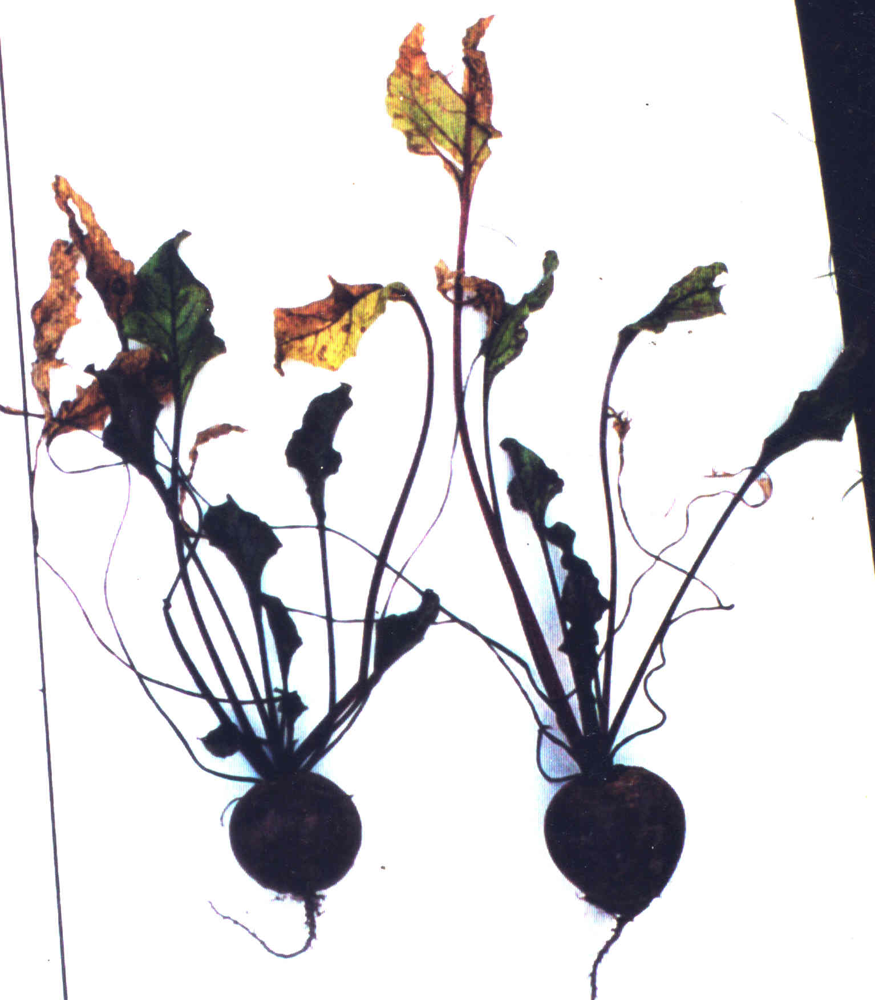

De teelt
De teelt
### lekker en gezond
Zo teel je producten die lekker en gezond zijn Een uitvoerige tekst over dit onderwerp kunt u hier als pdf (4 mb) downloaden
De teelt van producten met hoge kwaliteitINHOUDInleiding
De rol van het bodemtype
Bemesting
Zaai- en plantafstand
Biologisch en gangbaarZiekten en plagenKruiden en melkBodembeheer algemeen
## Inleiding
In de landbouw, zowel biologisch als gangbaar, wordt in het algemeen naar opbrengst uitbetaald en niet naar smaak en gezondheid van de producten.
Een hoge opbrengst nastreven middels bemesting gaat altijd ten koste van de kwaliteit.
Veredeling naar opbrengst gaat ook altijd ten koste van de kwaliteit. De afgelopen 60 jaar hebben smaak en gezondheid vrijwel geen aandacht gehad bij de veredeling.
Lees in het volgende hoe het anders kan
De rol van het bodemtype
Het bodemtype is een van de bepalende factoren voor de kwaliteit van landbouwproducten. Bij wijn is dat heel duidelijk, maar het geldt eigenlijk voor alle landbouwgewassen. Door zware en eenzijdige bemesting kan de de rol van de bodem wat weggedrukt worden maar bij normale bemesting is de bodem bij alle gewassen te herkennen.
Zand en Klei

Prei op de Veluwe (links, stijl en fier) en prei in de Betuwe (rechts, breed en fors). Verschillen in eigenschappen door verschillen in landschap geven meer diversiteit en daarmee meer kleur aan de voeding.
Tekening Leen Janmaat
Klei Flevoland
Een minder goede smaak komt veel voor in Flevoland.Een laag bemestingsniveau, goede voorvrucht bijvoorbeeld graan, een goed ras en wat grotere plantafstand kunnen bij peen hier wat aan doen.
Zeeklei Wieringermeer

Goed afgerijpt
Bladeren kleuren deels geel, goede smaak.
Oppassen dat de bodem niet te rijk is en niet teveel stikstof bemesten. Dan kunnen goede wortels geteeld worden.
Zand Veluwe

Na ijle groei door te weinig kalium, veel schimmelziektes. Loof valt om en enige hergroei begint. Smaak wrang, niet zoet.
Op zand worden de mooiste wortels geteeld bij bruine organische stof. Bij zwarte organische stof (podzol, veenkoloniaal) vaak wrange smaak. Bij geen goede bodem en verkeerde bemesting (kalium is bijvoorbeeld uitgespoeld) valt het niet mee om op zand goede wortels te telen.
Naar inhoudsopgave
Bemesting ## Inleiding
Bemesting is de belangrijkste maatregel waarmee de kwaliteit beïnvloed kan worden. Zowel in positieve als negatieve zin. In negatieve zin gaat het vooral om stikstof. Stikstof heeft een positieve invloed op de opbrengst en teveel stikstof een negatieve op de kwaliteit. Geleidelijk vrijkomen van stikstof is ook belangrijk. In het volgende wat voorbeelden rond het thema bemesting en kwaliteit. Knolselderij, stalmest en drijfmestDat stalmest goed is en drijfmest slecht kan niet in zijn algemeenheid gezegd worden. Drijfmest kan op een goede wijze ingezet worden. In het volgende wel een voorbeeld ten gunste van stalmest.

Stalmest
Een relatief trage begingroei. Daarna afrijping en matige aantasting door bladvlekkenziekte

Drijfmest
Bij drijfmest een uitbundige begingroei. Daarna een zeer sterke aantasting door bladvlekkenziekte en zeer lage opbrengst
Prei, lichte en zware bemesting

Lichte bemesting, groei meer in de breedte. Zeer goed houdbaar. Nitraatgehalte
495 mg/kg

Zware bemesting, omhoog gerichte groei.
Slecht houdbaar.
Niitraatgehalte
775 mg/kg
Prei, met en zonder hulpmeststof

Geen hulpmeststof
Groei sterk in de breedte, gezonde plant. Opbrengst 29 ton per ha.

100 kg N per ha als hulpmeststof
Groei sterk in de hoogte. Opbrengst39 ton per ha.
(Bokhorst, 1989)
Rode biet, drijfmest en compostOp het meerjarige proefveld Mest als Kans te Lelystad worden verschillende meststoffen vergeleken. Na drie jaar bemesten zijn de eigenschappen van rode biet vergeleken bij onder meer drijfmest en groencompost. De groencompost biet bevat meer suiker en droge stof en minder nitraat.Naast de planten worden ook kristallisatiebeelden getoond. Kristallisatiebeelden worden gebruikt om een breder beeld van de kwaliteit te krijgen. De overeenkomst tussen de vorm van de plant en het beeld zijn hier opvallend.(Onderzoek LBI Meer over stijgbeelden: www.crystal-lab.nl)

Gehalten drijfmestbiet:
Droge stof (%) 12,6
Suiker (%) 8,4
Nitraat (mg/kg) 640
Vrije aminozuren (mg/100g) 609
Opbrengst (ton per ha) 29

Kristallisatiebeeld drijfmest: Weelderig en wanordelijk
Gehalten compostbiet:
Droge stof (%) 15,0
Suiker (%) 10,3
Nitraat (mg/kg) 215
Vrije aminozuren (mg/100g) 380
Opbrengst (ton per ha) 18

Compost: Dunne structuur en zwakke ordening
Tomaat, licht en zwaar bemest

Links licht bemeste tomaat, rechts zwaar bemest.

Blad, links licht bemeste teelt, rechts zwaar bemeste teelt.
Bij zware bemesting is het blad sterker uitgegroeid. De tomaat is wateriger en heeft een dunnere schil.
Naar inhoudsopgave
Zaai- en plantafstand Onderzoek naar de relatie tussen het aantal planten per ha en kwaliteit is voor zover bekend nooit uitgevoerd. Dat er verschil in zaaiafstand is bij maximale opbrengst als doel of maximale kwaliteit ligt voor de hand.
Interessant in dit kader is de suikerbiet. Daar gaat het om de suikeropbrengst en niet om de bietopbrengst. Dit is niet hetzelfde als telen richting voedingskwaliteit bij producten die als geheel worden gegeten, maar heeft er wel mee te maken.Bij een rijafstand van ca 45 cm en een afstand in de rij van 19 cm op klei en 18 cm op zand wordt de hoogste suikeropbrengst verkregen. Tussen 1985 en 2000 is de suikeropbrengst met 50% gestegen en de zaaizaadhoeveelheid met 25% gedaald. Dit is mede het gevolg door onderzoek naar de relatie zaaizaad hoeveelheid en suikeropbrengst.
Bij suikerbiet gaat het niet om voedingskwaliteit. De suikerbiet is een kleine suikerfabriek. Het gaat wel om afrijping. Bij alle cultuurgewassen zouden ook data voor rijafstand en afstand tussen planten in de rij of voor zaaizaadhoeveelheid geformuleerd kunnen worden bij telen richting voedingskwaliteit.
Het benodigde onderzoek is dus nog niet uitgevoerd.
Naar inhoudsopgave
Biologisch en gangbaar Bij het verschil in kwaliteit tussen biologische en gangbare producten zijn belangrijk:
1. Bodem en bemesting. Biologisch bemest vaak minder met stikstofrijke mest, wat gunstig voor de kwaliteit is. De bodemverzorging krijgt meer aandacht, maar dit kan wel tot een grotere stikstoflevering in zomer en herfst leiden waardoor de kwaliteit van gangbare producten soms beter is dan biologische omdat bij biologische door de grotere stikstofnalevering de afrijping niet goed optreedt. Bij peen speelt dit een grote rol. Telen op de juiste plaats in de vruchtopvolging is dan heel belangrijk.
2. Ziekten. De gewasontwikkeling als basis voor kwaliteit is bij biologisch vaak beter, maar wanneer ziekten optreden die bij biologisch niet te bestrijden zijn kan de biologische kwaliteit slechter zijn.
In het volgende wat voorbeelden. Aardappel

Bij biologisch een compacte begingroei. Deze wordt plotseling afgebroken door een Phytophtora aantasting.
Gangbaar heeft een zware loofontwikkeling met veel legering (blad valt op de grond). Afsterving wordt voorkomen met bestrijdinggsmiddelen. De uitbundige loofgroei gaat nog lang door.
Biologisch heeft een evenwichtige groei. Gangbaar een te weelderige groei. Bij biologisch moest vanwege fytoftora aantasting vroeg gebrand. Bij gangbaar werd Pytophtora bestreden. Om deze reden was de kwaliteit van beide aardappels niet duidelijk verschillend. Zie ook product / aardappel.
tekeningen Gerda Peters
Witte kool

De gangbare planten hebben meer schimmelziekten, de biologisch-dynamische meer vraat door duiven, aardvlooien en koolrupsen. Dit duidt op een grotere innerlijke weerstand van de biologisch-dynamische planten.

Naar inhoudsopgave
Ziekten en plagen Wanneer planten ziek worden of door plagen worden aangetast is een planteigen ontwikkeling niet meer mogelijk. Bij ziektes speelt vaak een zwakke plant een rol. Bij plagen vaak niet. De aanpak is iedere keer weer anders en bij biologisch is de aanpak anders dan bij gangbaar. Raadpleeg voor de biologische teelt deskundigen:
www.coenterberg.nlwww.naturim.nlwww.delphy.nl.
Naar inhoudsopgave
Kruiden en melk Bij melk gaat het om kruiden.De begrippen groei en rijping lijken bij dierlijke producten niet zo makkelijk toe te passen. De planten die dieren eten zijn weer wel in die richting te waarderen. Bij melk zijn hier duidelijke onderzoeksresultaten bekend. Hooi en kruiden hebben meer rijpingskwaliteit. Zwaar bemest jong gras meer groei.
In 1981 en 1982 is onderzoek gedaan naar het gedrag van melk bewaard bij 20o C (NRLO 1983c). Melk van verschillende bedrijven bleken wisselend lang drinkbaar. Na deze periode konden ze overgaan in rotting of verzuring. Deze processen zijn te verbinden met groei (rotting, basisch) en rijping (verzuring). Verzuring sluit meer aan bij natuurlijke processen en is waarschijnlijk gunstiger. In 2015 zei Ton Baars, een van de onderzoekers, op een congres over dit onderzoek dat uit een dergelijk onderzoek kon worden afgeleid hoe de melk tot ons spreekt.
Melk van koeien die in de zomer maandenlang in de wei lopen en niet te zwaar bemest gras eten en in de winter hooi en niet teveel maiskuilvoer eten bevat een hoger gehalte aan meervoudige onverzadigde vetzuren bevatten zoals CLA’s (geconjungeerd linolzuur) en omega-3. Ton Baars (Adriaanse e.a., 2005) deed hier veel onderzoek naar. Aan omega 3-vetzuren worden positieve eigenschappen toegeschreven in het voorkomen van hart- en vaatziekten artritis en depressies. Biologische bedrijven hebben vaak hogere gehalten aan omega 3 vetzuren.
-1920w.JPG)
Gehalten aan omega 3 vetzuren op 5 biologische (groen) en 5 gangbare (blauw) bedrijven.
(Adriaanse e.a., 2005)
Naar inhoudsopgave
Bodembeheer algemeen Voor een kwaliteitsproduct:1. Beperk de stikstofvoorzieningCruciaal is het dat er voor het betreffende gewas geen te hoge stikstofbeschikbaarheid is. De huidige stikstofnormen zijn gericht op de opbrengst en niet op kwaliteit. Stikstof komt uit meststoffen en uit de bodem. Voor dit laatste raadpleeg www.ndicea.nl en www.goedbodembeheer.nl.
2. Niet teveel en niet te weinig kaliumVoldoende kalium is essentieel voor een goede voedingskwaliteit. Kalium is belangrijk voor een goede smaak, voor veel andere producteigenschappen en voor weerbaarheid tegen plantenziekten. Let op! Teveel is ook niet goed. Houdbaarheid en smaak gaan bij teveel kalium achteruit.
3. Overige voedingsstoffen niet teveel en niet te weinigLet op voldoende aanvoer van fosfor, magnesium en sporenelementen. Deels is dit een kwestie van een goede zuurgraad. Deels van een afvoer vergelijkbaar met de aanvoer. Lees meer op www.goedbodembeheer.nl
4. aanvoer van organisch materiaalZorg voor een constante aanvoer van organisch materiaal via gewasresten, groenbemesters, compost en mest. Streefhoeveelheid ca 2500 kg eos (effectieve organische stof) per jaar per ha.
5. BewortelingsdiepteZorg voor een bewortelingsdiepte van tenminste 40 cm. Belangrijk voor een evenwichtige groei. Verzorg bodemstructuur en bodemleven. Zie www.goedbodembeheer.nl. Graaf een kuil!
6. Evalueer uw inspanningenVergelijk de smaak eens met producten van elders en volg de gewasontwikkeling, vergelijk uw product met de streefwaarden. Kijk naar groei en afrijpen. Ander ras misschien?